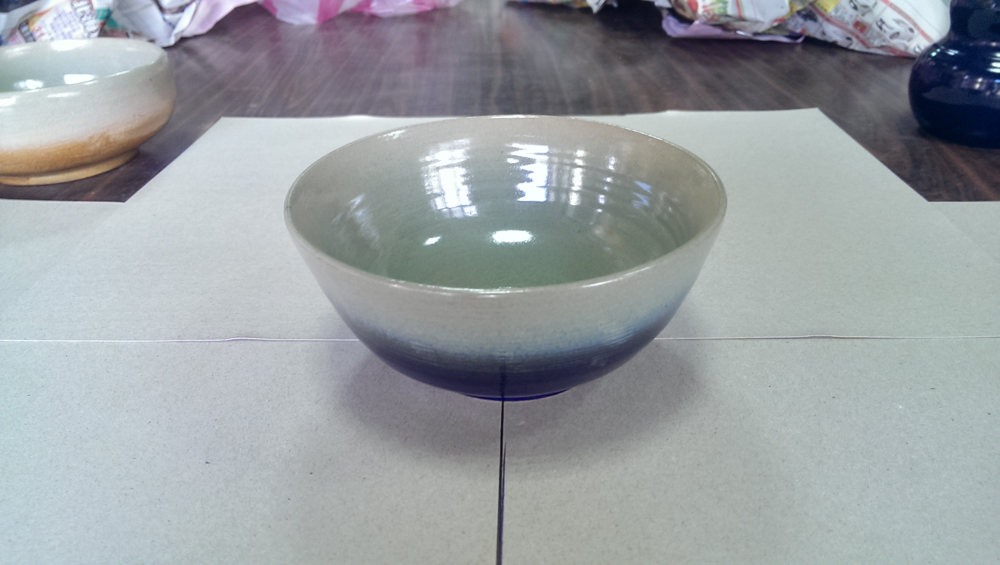
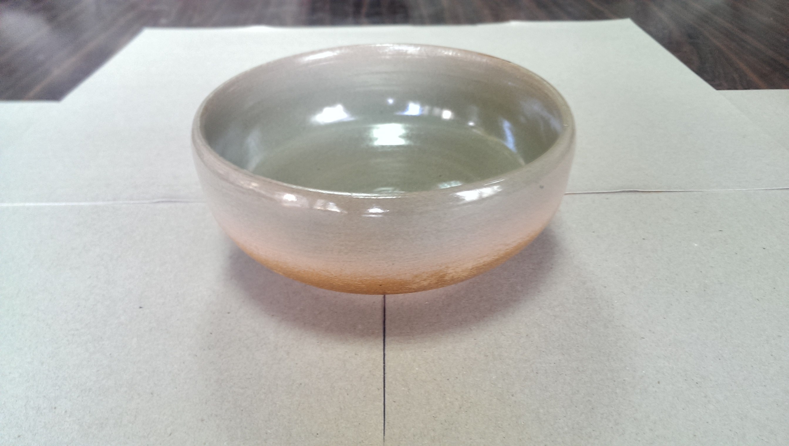
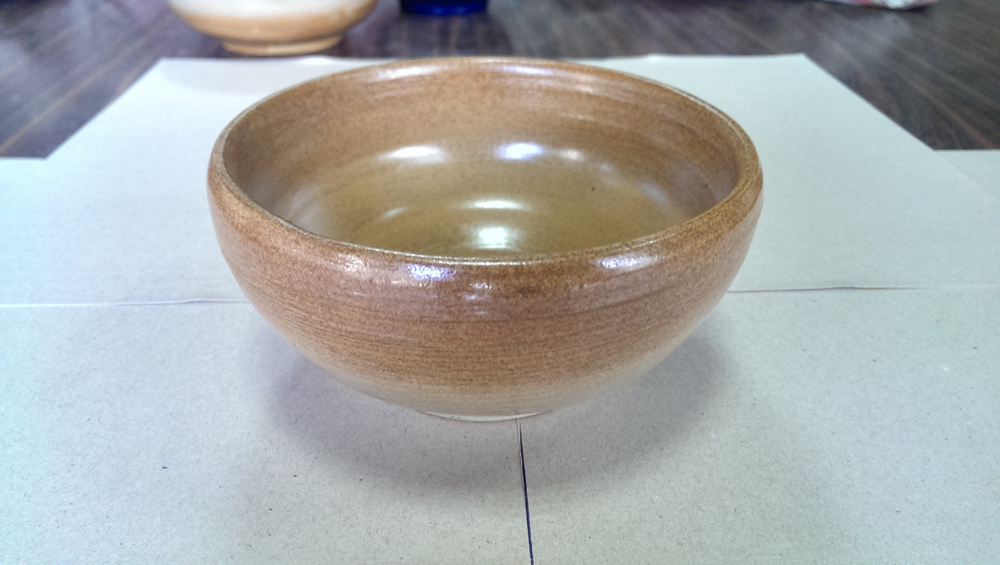
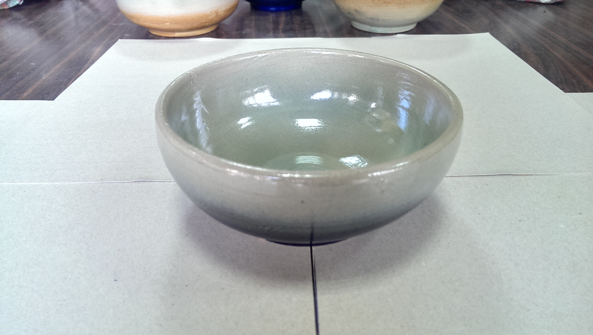
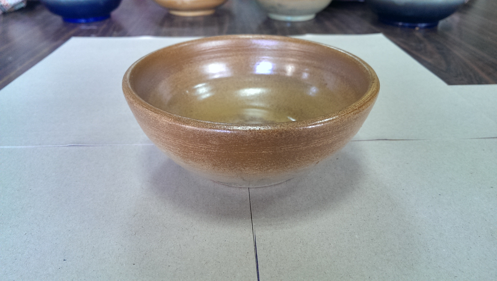
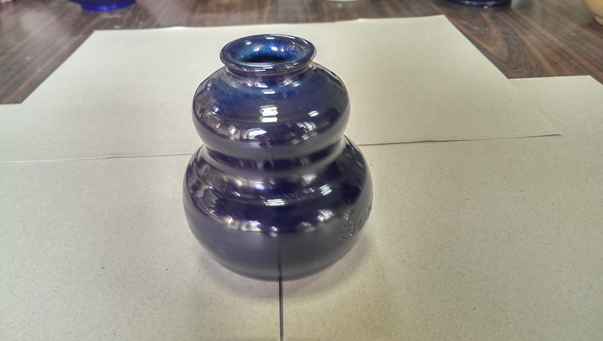

鶯歌一日遊學2013第一梯次學員心得 |
||||
第一站：三好製模廠，原來用石膏開模要經過塑原型、樣品模、母模、子模等重重步驟，要把國外的來圖做出樣品，真的是完全靠師傅的巧手；然後因為是靠石膏的吸水特性，讓泥漿附著在子模的表面陰乾，憑經驗把多餘的水倒出，所以一個子模大概只能用個100次就報廢了，打碎的模具只能拿來製作粉筆。 第二站：金鴻華轉寫印刷廠，來到這裡參觀，媽媽才知道原來量產陶瓷品上的圖案不是手繪，而是用「花紙」把圖案轉印在量產陶瓷品上。而一張花紙要經過繪圖、製版、釉彩調配、分色印刷、上膜、洗紙等步驟，且一種顏色就要製一個版（量身訂做的相片圖檔可能會用上10多個版）。還好網版可以重複利用，而現代全自動化的機器也讓分色印刷的速度變快許多。 第三站：振弘加工廠，在這裡把花紙貼上陶瓷用品，送入隧道式爐窯把圖案燒上去，這個部分幾乎通通都是人工。這裡最大的收穫是原來花紙上黃色的膜在高溫200度左右時就會揮發，所以最後的成品不會看到膜，只剩下燒到800度、足以把花紙圖案吃色進去的陶瓷品。然後花紙會配合陶瓷品的弧度，決定是否要切開，以免用水貼上去時不夠平整。 第四站：和協陶瓷器有限公司，在這裡看到從泥漿到燒製成品的完整量產過程，聽力不好的媽媽一馬當先跑去看師傅灌模、脫模，看來她真的很享受這趟遊學。在上釉的步驟中，我們發現釉彩乾得好快，所以師傅的指印並不會上去，倒是底部的釉料要擦去，才不會在窯內燒製時黏住破底。至於上釉過程可分為釉下燒（素燒、800度）和釉上燒（1200度）兩種，不過可以兩種都燒，就是燒兩遍。而把上釉好的陶瓷品擺放在燒窯的架上也有know-how，例如要從上往下放，才不會掉灰塵；期望釉彩亮面的話，要把陶瓷品放邊邊，溫度比較高，期望釉彩顏色低調一點，則往中間放。此外，和協公司現在已經發展出可以把水庫淤泥拿來燒成產品的方法（馬桶是最難燒的，所以以此為例），這是一個可以減少瓷土進口又能幫助水庫清淤的win-win產品，聽說成本還可以減少2成，很期待他們能成功推廣。 第五站：在陶驛陶藝用餐，用餐區的後面，就是今天的重頭戲--手拉胚的地點。看了只覺得... 老師太強了，隨便一下子就做出一個葫蘆來，剩下的一點餘土還能做出小葫蘆。至於我們的成果，本來完全沒有信心的媽媽和姊姊，很快地做出了一個碗和一個筆筒；反倒是曾經在國中參加陶藝社的我，卻是在把第一塊土玩成一團爛泥後，請老師幫我換了一塊土，再加上老師的幫忙，才終於做出一個看起來有點歪歪的杯子，還煩勞老師安慰我說，因為泥土有點移位，所以有點厚薄不一，會更有「特色」，哈！ 第六站：新太源藝術工坊，這裡是販售藝術品的地方，這間店用故宮授權的「12月令圖」以及自行燒製的馬賽克或磁磚拼貼，做了多根柱子以及1-9月的壁畫，費時3個多月，每根柱子的成本要80萬元，工程浩大，不愧是鎮店之寶。 第七站：陶瓷老街，在這裡自由參觀陶藝品的銷售。其實之前常常和家人來逛，也曾帶國外朋友來鶯歌玩，但總覺得這裡的商品定價似乎只有極高和極低兩端，中價位產品的同質性偏高，比如客家花布風格茶杯，這家賣、另一家也賣；另外就是蠻多留學生喜歡送給外國朋友、可訂作刻字的巧意杯，不知道為什麼，這麼多年來在色彩或杯型的選擇上居然沒有發展出太多變化。但這次逛到一間自創品牌的新店面--新旺集瓷，在明亮有設計感的空間中，提供手創商品、手作教室、甚至還有2F的定時導覽，櫃臺也有放附有鶯歌地圖的廣告扇子，有令人耳目一新的感覺。 第八站：鶯歌農會，他們真是太有心了，為了發展地方特色，在旁邊設立台灣陶瓷藝術館，專門展出鶯歌藝術家的作品（不一定是土生土長的鶯歌人，只要是和鶯歌有合作即可），裡面精緻的陶瓷作品可以看見台灣人的創意，熱心的經理還邀我們下次去泡茶喔！ 總之，今天的行程非常充實，讓我們有機會更深入思考台灣文創產業的軟實力，若有其他朋友有機會來到鶯歌，非常推薦這樣的遊程。 |
||||
|
||||
| 學員作品 | ||||
|  |  |  |  | |
|  |  | |||